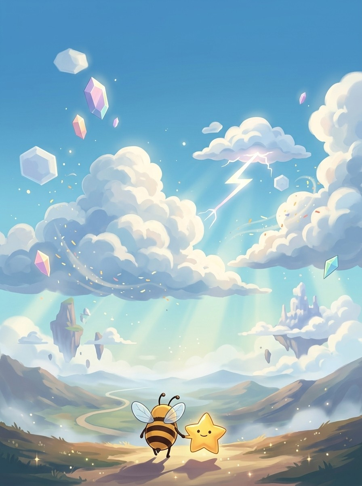
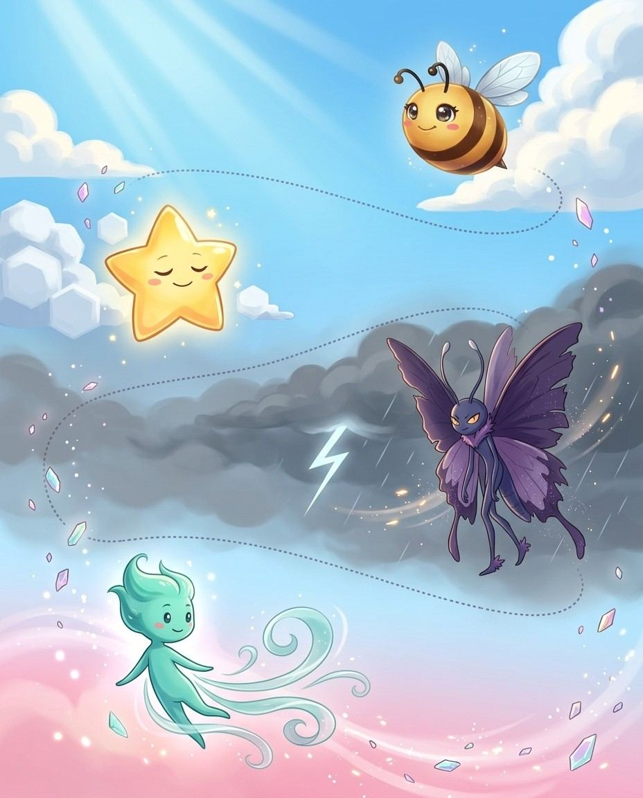

Hi — I'm Star. Greek and number prefixes, endings included — that's where we're going, one chapter at a time. Bring a pencil. I'll bring the words.
1
Read the story
Each chapter opens like a film. Vex sets the trap; your guide walks you out of it.
2
Steal the pro move
The dark box is how a champion thinks on stage. It works on brand-new words too.
3
Spell out loud, then write
Say it, spell it OUT LOUD, then write it in the box. Mouth and hand together beat eyes alone.
4
Pass the checkpoint
A short quiz on the chapter you just read. Circle your answers; the back of the book keeps the truth.
5
Play the game, then revise
Every chapter ends with a fun game, answer key at the back. Revise all words at the end and circle the ones you can spell and define.
Bizzing Bee · Greek Lightning1
Greek LightningThe cast
Bizzy — and this book's guide, Star
The crew of Vol. 4
Nobody spells alone. Meet the crew walking this world with you — they will hand you puzzles, run your checkpoints and cheer from the margins.
Bizzy — The little bee who spells the world back together, one petal at a time. · Star — Born for the spotlight, centre stage always.
Breeze
OVR 62
Rookie of the Elements
A gentle push in the right direction.
Supernova
OVR 74
Champion of the Cosmos
Goes out with the biggest bang in the galaxy.
Zappy
OVR 70
Champion of the Elements
A flash of pure electric excitement.
Poseidon
OVR 86
Champion of the Pantheon Peaks
Moody as the sea and twice as deep.
Leafy
OVR 63
Speller of the Elements
Grows a little greener with every word.
Ember
OVR 68
Speller of the Elements
A tiny spark with a warm heart.
Saturn
OVR 68
Champion of the Cosmos
Calm, ringed and always the coolest in the room.
Isis
OVR 63
Champion of the Pantheon Peaks
The wise Egyptian goddess of magic, healing and protection.
And the other one
Vex the word-moth sneaks through every chapter, planting the exact mistakes real spellers make. Spot the trap before you step in it.
Bizzing Bee · Greek Lightning2

WELCOME TO
The Storm of Elements
Greek blows in like weather — catch the bolts and the words light up.
Bizzing Bee · Greek Lightning3

1Greek Prefixes · the Storm of Elementsanti- / hyper- / hypo- (against / over / under)
Bizzyanti = against, hyper = over, hypo = under
UH-OH!
Vexhypocrisy = H-Y-P-O-C-R-I-S-Y, not -acy
Breezeantidote = anti- + didonai (give)
Leafyhyperbole = hyper- + ballein (throw)
♫ narratedturn the page — the whole trick, explained →
4
Chapter 1 · anti- / hyper- / hypo- (against / over / unde…The idea · ★★☆
The big idea
Greek anti- = against, hyper- = over/excessive, hypo- = under/insufficient. In medicine, knowing the prefix IS knowing the diagnosis. In literature, hyperbole and hypocrisy are built from this same trio.
Antipathy (anti- + pathos) = feeling against = deep dislike. Antithesis = placed against = direct opposite. Antidote (anti- + didonai = give) = given against a poison.
hypertrophy/HEYE-per-troh-fee/ abnormal enlargement of a body part or organ
hyperopia/heye-per-OH-pee-ah/ abnormal condition in which vision for distant objects is better than for near objects
hypothesis/h-ay-p-AH-th-uh-s-uh-s/ is a proposition set forth to explain some occurrence
hypocrisy/h-ih-p-AH-k-r-uh-s-ee/ is pretending to something that one doesn't believe
hypochondria/heye-puh-KAH-ndree-uh/ chronic and abnormal anxiety about imaginary symptoms and ailments
hypocaust/HY-poh-kawst/ a central heating system of an ancient Roman building consisting of an underground furnace and a series of tile flues for distribution of the heat.
hypertension/heye-per-TEH-nshuhn/ a common disorder in which blood pressure remains abnormally high (a reading of 140/90 mm Hg or greater)
Five Greek prefixes of size and distance — from "self" to "far," from "tiny" to "enormous." These appear in science, technology, and everyday vocabulary. Learning them unlocks everything from microscope to megalomania.
Telepathy (tele- + pathos) = feeling from far away. Teleology (tele- + logos) = study of purposes/ends. Telekinesis (tele- + kinesis = movement) = moving things from a distance.
Vex alert
AutoNOMy = self-law — NOM not NAM, think of NORMS you set for yourself.
Check yourself
Cover the page. Spell these three out loud: automaton · autophagy · autodidact. Say each letter like you mean it.
Poseidon · Champion of the Pantheon Peaks runs the checkpoint
Do you own the idea?
Circle your answer, then check the back. No pressure — wrong answers are how the right ones stick. Poseidon's power is Tidal Surge — commands every sea — borrow it.
1. What does telemetry mean?
Aa person who has taught himself
Bimmunity from arbitrary exercise of authority: political independence
Ceverything that exists anywhere; the whole universe
Dautomatic transmission and measurement of data from remote sources by wire or radio or other means
2. What does autonomy mean?
Aautomatic transmission and measurement of data from remote sources by wire or radio or other means
Ba person who has taught himself
Cimmunity from arbitrary exercise of authority: political independence
Da political system governed by a single individual
3. “TELEMETRY MEASURES from afar — TELE+METRY, and METER is hiding right in the middle!” — which word is that about?
Atelescope
Bautonomy
Cautodidact
Dtelemetry
4. Which word fills the gap? “Mission controllers monitored the astronaut's heart rate through ▁▁▁ sent directly from sensors aboard the spacecraft.”
Atelemetry
Bautomaton
Cmicrocosm
Dautodidact
Dictation round
Hand this page to anyone nearby. They read the words from the answer key (Ch. 2 dictation, at the back) — you write, no peeking.
Five Greek scientific prefixes — life, earth, light, water, heat — forming the backbone of natural science vocabulary. Every science class uses them; every spelling bee tests them. All require ph not f.
The pro move
PHOTOSYNTHESIS
Say it. f-oh-t-oh-s-IH-n-th-uh-s-ih-s
Spell it. P · H · O · T · O · S · Y · N · T · H · E · S · I · S
Say it again. f-oh-t-oh-s-IH-n-th-uh-s-ih-s
Syllables. p · h · o · t · o · s · y · n · t · h · e · s · i · s
Biology = study of life. Biome = a life community. Biopsy (bio- + opsis = seeing) = visual examination of living tissue. Symbiosis (sym- + bio-) = living together mutually.
geo- = Earth
Geography = writing about the earth. Geology = study of earth. Geothermal = earth-heat. Geodesic (geo- + daiein = divide) = shortest path on a sphere. Geocentric = earth-centered view.
Vex alert
BIO + LOGY — every -logy word studies something; this one studies life (bio).
Check yourself
Cover the page. Spell these three out loud: biology · biome · biopsy. Say each letter like you mean it.
geology/jee-AH-luh-jee/ a science that deals with the history of the earth as recorded in rocks
geothermal/jee-oh-THUR-muhl/ of or relating to the heat in the interior of the earth
geodesic/jee-uh-DEH-sihk/ (mathematics) the shortest line between two points on a mathematically defined surface (as a straight line on a plane or an arc of a great circle on a sphere)
photosynthesis/f-oh-t-oh-s-IH-n-th-uh-s-ih-s/ the formation of carbohydrates from carbon dioxide and a source of hydrogen in chlorophyll-containing cells
photogenic/foh-tuh-JEH-nihk/ looking attractive in photographs
photon/FOH-tahn/ a quantum of electromagnetic radiation; an elementary particle that is its own antiparticle
hydrolysis/h-ay-d-r-AH-l-uh-s-uh-s/ is chemical decomposition by reacting with water
hydroponics
hydraulic/h-ay-d-r-AW-l-ih-k/ is employing water or other liquids in motion
hydrophobia/heye-druh-FOH-bee-uh/ a symptom of rabies in humans consisting of an aversion to swallowing liquids
thermometer/ther-MAH-muh-ter/ measuring instrument for measuring temperature
thermostat/THUR-muh-stat/ a regulator for automatically regulating temperature by starting or stopping the supply of heat
Lock them in
Pick 4 words from above. Say each one as you write it — three times, no shortcuts. The third copy is the one your hand remembers.
Six Greek body-system prefixes that unlock all medical specialist names and condition vocabulary. Know these six and the science section of any spelling bee becomes a pattern-matching exercise.
Neurology = study of the nervous system. Neuropathy = nerve disease. Neuroticism = anxiety-prone personality trait. Neurosis = a mild mental disorder.
cardio- = Heart
Cardiology = study of the heart. Cardiovascular = heart and blood vessels. Electrocardiogram = E-L-E-C-T-R-O-C-A-R-D-I-O-G-R-A-M = record of heart electricity (EKG).
Vex alert
PSYCHOlogy — the PSYCHO at the start is the mind gone wild; don't forget the silent P.
Check yourself
Cover the page. Spell these three out loud: neurology · neuropathy · neuroticism. Say each letter like you mean it.
myocardium/meye-uh-KAH-rdee-uhm/ the middle muscular layer of the heart wall
pericardium
osteology/os-tee-OL-oh-jee/ the branch of anatomy that studies the bones of the vertebrate skeleton
osteoporosis/aw-stee-ah-per-OH-sihs/ abnormal loss of bony tissue resulting in fragile porous bones attributable to a lack of calcium; most common in postmenopausal women
osteopathy/os-tee-OP-uh-thee/ therapy based on the assumption that restoring health is best accomplished by manipulating the skeleton and muscles
psychology/seye-KAH-luh-jee/ the science of mental life
psychosis/seye-KOH-suhs/ any severe mental disorder in which contact with reality is lost or highly distorted
psychosomatic/seye-koh-suh-MA-tihk/ used of illness or symptoms resulting from neurosis
dermatology/dur-muh-TAH-luh-jee/ the branch of medicine dealing with the skin and its diseases
epidermis/eh-puh-DUR-muhs/ the outer layer of the skin covering the exterior body surface of vertebrates
hypodermic/heye-puh-DUR-mihk/ a piston syringe that is fitted with a hypodermic needle for giving injections
hematology/heh-muh-TAH-luh-jee/ the branch of medicine that deals with diseases of the blood and blood-forming organs
hemorrhage/h-EH-m-ur-ih-j/ is a profuse discharge of blood
Lock them in
Pick 4 words from above. Say each one as you write it — three times, no shortcuts. The third copy is the one your hand remembers.
Five Greek positional prefixes describing relationships between things — appearing in philosophy, science, grammar, medicine, and championship spelling bees. Each has a precise spatial or relational meaning.
The pro move
METAMORPHOSIS
Say it. meh-tuh-MAW-rfuh-suhs
Spell it. M · E · T · A · M · O · R · P · H · O · S · I · S
the marked and rapid transformation of a larva into an adult that occurs in some animals
hook: metaMORPHosis: the caterpillar MORPHs through a process (-osis), not an 'a'.
the ▁▁▁ of the old house into something new and exciting
metaphor
/ m-EH-t-uh-f-aw-r / · /mˈɛtəfɔr/
is a figure of speech in which a term is applied to something to which it isn't literally applicable
hook: A metaPHOR carries meaning across — it PHORwarded an idea to a new place.
When the poet wrote that life is a rollercoaster, she was using a ▁▁▁ to describe its unpredictable ups and downs.
metabolism
/ muh-TA-buh-lih-zuhm / · /məˈtæbəlɪzəm/
the marked and rapid transformation of a larva into an adult that occurs in some animals
hook: METABOLISM — META + BOL + ISM: beyond-throw-process, the body's engine always has an A after MET and a B in the middle.
Regular exercise can speed up your ▁▁▁ and help you feel more energetic.
metacognition
/ meh-tuh-kog-NIH-shun / · /mɛtəkɑɡˈnɪʃʌn/
The awareness and understanding of one's own thought processes, including the ability to monitor, evaluate, and regulate how one learns and solves problems.
hook: META-COGNITION: META = beyond, COGNITION = thinking — THINKING ABOUT YOUR OWN THINKING.
Using ▁▁▁, she thought carefully about how she studies and decided to change her approach.
parable
/ p-EH-r-uh-b-uh-l / · /pˈɛrəbəl/
a short moral story, often using everyday situations or characters to illustrate a lesson or principle
hook: A PARABLE throws (ballo) ideas BESIDE each other to teach a lesson
the ▁▁▁ of the prodigal son
paralysis
/ p-ur-A-l-uh-s-uh-s / · /pərˈæləsəs/
is a loss of movement in a body part caused by disease or injury
hook: PARALYSIS ends in LYSIS — the body's systems come LOOSE: P-A-R-A-L-Y-S-I-S.
After the accident, the athlete suffered temporary ▁▁▁ in his left leg and had to undergo months of therapy.
6Number Prefixes · the VibeNumber Prefixes 1–10: Latin & Greek
BizzyEnglish counts in two old languages
UH-OH!
Vexmillennium = mille + annum → double-l AND double-n
GOT IT!
Embertri- + ptychē (fold) → triptych
Breezeuni- (Latin) and mono- (Greek) both = one
♫ narratedturn the page — the whole trick, explained →
35
Chapter 6 · Number Prefixes 1–10: Latin & GreekThe idea · ★☆☆
The big idea
English borrows number prefixes from both Latin and Greek. Knowing both sets doubles your ability to decode scientific, mathematical, and historical vocabulary at sight.
The pro move
QUINTET
Say it. kwih-NTEHT
Spell it. Q · U · I · N · T · E · T
Say it again. kwih-NTEHT
Syllables. kwih · nteh · t
Sounds → Letters. [kwin=QUIN] [TET=TET]
One and Two
Latin uni- / Greek mono-: unicorn, universe, uniform vs monologue, monopoly, monocle. Latin bi-/du- / Greek di-: bicycle, bilingual vs dialogue, dichotomy, dilemma.
Three and Four
Tri- is the same in both Latin and Greek! trilogy, triangle, trinity AND triptych (tri- + ptychē = fold = three-paneled artwork).
Vex alert
A BICYCLE has TWO (bi-) CYCLES
Check yourself
Cover the page. Spell these three out loud: unicorn · monologue · bicycle. Say each letter like you mean it.
Bizzing Bee · Greek Lightning36
Chapter 6 · Number Prefixes 1–10: Latin & GreekPractice · ★☆☆
Say it. Spell it out loud. Write it.
unicorn
/ YOO-nih-kawrn / · /ˈjunɪkɔrn/
an imaginary creature represented as a white horse with a long horn growing from its forehead
hook: A UNICORNer has UNI (one) CORN-shaped horn — no 'k', it's Latin fancy.
The little girl drew a glittery ▁▁▁ with a silver horn on her birthday card.
monologue
/ MAH-nuh-lawg / · /ˈmɑnəlɔɡ/
speech you make to yourself
hook: A MONOlogue is ONE person's LOGUE (speech) — one mouth, lots of words, add the UE.
The actor delivered a powerful ▁▁▁ that left the entire audience holding its breath.
bicycle
/ BEYE-sih-kuhl / · /ˈbaɪsɪkəl/
a wheeled vehicle that has two wheels and is moved by foot pedals
hook: A BICYCLE has TWO (bi-) CYCLES — two wheels going round and round, spelled with a Y not an I: bi-CY-cle.
He rode his ▁▁▁ to school every morning, weaving through the quiet neighborhood streets.
dialogue
/ d-AY-uh-l-aw-g / · /dˈeɪəlɔɡ/
is conversation with two or more people
hook: A dialogUE always ends politely with a silent UE — the quiet goodbye at the end of a conversation.
he has read Plato's ▁▁▁ in the original Greek
dichotomy
/ d-ay-k-AH-t-uh-m-ee / · /deɪkˈɑtəmi/
is division into two parts
hook: DICHOTOMY cuts things in two — spot the CH and remember 'cut in two halves.'
the ▁▁▁ between eastern and western culture
trilogy
/ TRIH-luh-jee / · /ˈtrɪlədʒi/
a set of three literary or dramatic works related in subject or theme
hook: A TRILOGY tells THREE stories—tri+LOGY like biology and geology, ends in Y not IE.
She stayed up all weekend to finish the final book of the fantasy ▁▁▁ she had been reading all month.
Bizzing Bee · Greek Lightning37
Chapter 6 · Number Prefixes 1–10: Latin & GreekRapid round · ★☆☆
More ammo — one line each.
triptych/TRIH-ptihk/ art consisting of a painting or carving (especially an altarpiece) on three panels (usually hinged together)
quadrant/KWAH-druhnt/ a quarter of the circumference of a circle
tetrahedron/teh-truh-HEE-druhn/ any polyhedron having four plane faces
pentagon/PEH-ntih-gahn/ a government building with five sides that serves as the headquarters of the United States Department of Defense
quintessence/k-w-ih-n-t-EH-s-uh-n-s/ is the pure and concentrated essence of a substance
hexagon/HEH-ksuh-gahn/ a six-sided polygon
septuagenarian/s-eh-p-ch-oo-uh-j-uh-n-EH-r-ee-uh-n/ is between 70 and 80 years of age
octave/AH-ktihv/ a feast day and the seven days following it
decathlon/dee-KA-thlawn/ an athletic contest consisting of ten different events
millennium/m-uh-l-EH-n-ee-uh-m/ is a period of 1000 years
centimeter/SEH-ntuh-mee-ter/ a metric unit of length equal to one hundredth of a meter
nonagenarian
Lock them in
Pick 4 words from above. Say each one as you write it — three times, no shortcuts. The third copy is the one your hand remembers.
Bizzing Bee · Greek Lightning38
Chapter 6 · Number Prefixes 1–10: Latin & GreekCheckpoint · ★☆☆
Isis · Champion of the Pantheon Peaks runs the checkpoint
Do you own the idea?
Circle your answer, then check the back. No pressure — wrong answers are how the right ones stick. Isis's power is Endless Engine — borrow it.
1. What does pentagon mean?
Aart consisting of a painting or carving (especially an altarpiece) on three panels (usually hinged together)
Ba government building with five sides that serves as the headquarters of the United States Department of Defense
Cis between 70 and 80 years of age
Dis the pure and concentrated essence of a substance
2. What does octave mean?
Ais a period of 1000 years
Bspeech you make to yourself
Ca feast day and the seven days following it
Dis conversation with two or more people
3. Which spelling is correct?
Acintimeter
Bcentimetar
Ccenntimeter
Dcentimeter
4. “A PENTAgon has FIVE angles — pen-ta sounds like 'penta' which always means five.” — which word is that about?
Aseptuagenarian
Bquintessence
Cpentagon
Dmonologue
5. Which word fills the gap? “Officials at the ▁▁▁ held a press conference to address the nation's new defense strategy.”
Atetrahedron
Bseptuagenarian
Cpentagon
Dtrilogy
6. Which word belongs to this chapter’s family?
Apentagon
Bescape
Cphenomenon
Ddisingenuous
Dictation round
Hand this page to anyone nearby. They read the words from the answer key (Ch. 6 dictation, at the back) — you write, no peeking.
1.
2.
Bizzing Bee · Greek Lightning39
Chapter 6 · Number Prefixes 1–10: Latin & GreekGame · ★☆☆
Saturn's puzzle page
Scramble & rescue
Unscramble
myotdcioh
trceimneet
ncourin
evctoa
crtptihy
ybceicl
Rescue the vowels
d_c_thl_n
tr_ptych
d_ch_t_my
n_n_g_n_r__n
m_ll_nn__m
tr_l_gy
Bizzing Bee · Greek Lightning40
7Number Prefixes — Many & All · the Big Stagepoly- / multi- / omni- / pan- (many / all)
BizzyFour ways to say many or all
UH-OH!
Vexpan- = Greek; polyphony uses ph, not f
GOT IT!
Saturnomni- + vorare (eat) → omnivore
Supernovapoly- + glotta (tongue) → polyglot
♫ narratedturn the page — the whole trick, explained →
Greek poly- = many, Latin multi- = many, Latin omni- = all, Greek pan- = all. Four ways to say "many/all" — each with its own vocabulary territory and spelling patterns.
Hanuman · Champion of the Pantheon Peaks runs the checkpoint
Do you own the idea?
Circle your answer, then check the back. No pressure — wrong answers are how the right ones stick. Hanuman's power is Quick Draw — borrow it.
1. What does omnibus mean?
A
Ban anthology of articles on a related subject or an anthology of the works of a single author
Ca person who eats all kinds of foods
Da person of great and varied learning
2. What does omnipotent mean?
Ahaving unlimited power
Ba person of great and varied learning
Cbeing present everywhere at once
D
3. “OMNI means ALL — an omnibus has ALL the works in one bus-sized book” — which word is that about?
Apolyphony
Bpolymath
Comniscient
Domnibus
4. Which word fills the gap? “The library purchased an ▁▁▁ of Sherlock Holmes stories so students could read all of Arthur Conan Doyle's mysteries in one volume.”
Aomnipresent
Bmultifarious
Comnibus
Dpanacea
5. Which word belongs to this chapter’s family?
Ademocracy
Bintermezzo
Carmadillo
Domnibus
Dictation round
Hand this page to anyone nearby. They read the words from the answer key (Ch. 7 dictation, at the back) — you write, no peeking.
Greek -ismos = doctrine or practice; -istes = practitioner. Every -ism is a belief system or practice; every -ist is the person who holds or practices it. The pair is always structurally parallel.
-ism = the belief/practice itself. -ist = the person. Nihilism (nihil = nothing) = belief nothing has meaning; nihilist = one who holds this.
-ism in Religion & Philosophy
Monotheism (mono- + theos) = one god. Polytheism = many gods. Atheism (a- + theos) = no god. Agnosticism = uncertain about gods. Stoicism = philosophy of endurance.
Vex alert
NIHILism — NIHIL means NOTHING in Latin; nihilism = the belief in nothing
Check yourself
Cover the page. Spell these three out loud: nihilism · narcissism · ostracism. Say each letter like you mean it.
Breeze · Rookie of the Elements runs the checkpoint
Do you own the idea?
Circle your answer, then check the back. No pressure — wrong answers are how the right ones stick. Breeze's power is Ice Cool — borrow it.
1. What does euphemism mean?
Ais a nonstandard or ungrammatical usage
Bis excessive self-love vanity
Can inoffensive or indirect expression that is substituted for one that is considered offensive or too harsh
Da series of question put to an individual (such as a political candidate) to elicit their views
2. What does catechism mean?
Asomething located at a time when it could not have existed or occurred
Bthe doctrine or belief that there is no God
Ca series of question put to an individual (such as a political candidate) to elicit their views
Dis excessive self-love vanity
3. “EUPHEMism: EU(good)+PHEME(speech) — saying something GOOD instead of harsh; the PH sounds like 'F' for 'Friendly speech.'” — which word is that about?
Asolipsism
Bostracism
Ceuphemism
Danachronism
4. Which word fills the gap? “Saying someone has 'passed away' instead of 'died' is a common ▁▁▁ used to soften the pain of loss.”
Acatechism
Batheism
Ceuphemism
Dstoicism
Dictation round
Hand this page to anyone nearby. They read the words from the answer key (Ch. 8 dictation, at the back) — you write, no peeking.
Greek logos = word/reason/study. The -ology suffix = the study of. One of the most productive patterns in English — know the root, know the field, know the specialist name.
The pro move
OPHTHALMOLOGY
Say it. ah-p-th-uh-m-AH-l-uh-j-ee
Spell it. O · P · H · T · H · A · L · M · O · L · O · G · Y
Say it again. ah-p-th-uh-m-AH-l-uh-j-ee
Syllables. o · p · h · t · h · a · l · m · o · l · o · g · y
Root + -ology = study of that root. Biology = study of life. Geology = earth. Vexillology (vexillum = flag) = flags. Campanology (campana = bell) = bells.
The -ologist Specialist
Add -ist after the -olog-: seismologist (seismos = earthquake). Graphologist = handwriting. Gerontologist (geron = old man) = aging. Ornithologist (ornis = bird) = birds.
Vex alert
EPISTEMOLOGY: the STUDY (-logy) of what SEEMS (-steme) to be KNOWN
Check yourself
Cover the page. Spell these three out loud: ophthalmology · seismology · graphology. Say each letter like you mean it.
dendrochronology/deh-ndroh-kruh-NAH-luh-jee/ the science of dating events and variations in environment in former periods by study of the rings of growth in trees and aged wood.
eschatology
epistemology/eh-pih-stuh-MAH-luh-jee/ the philosophical theory of knowledge
phenomenology/fuh-NAH-muh-nah-lah-gee/ a philosophical doctrine proposed by Edmund Husserl based on the study of human experience in which considerations of objective reality are not taken into account
paleontology/pay-lee-uh-NTAH-luh-jee/ the earth science that studies fossil organisms and related remains
choreographer/kaw-ree-AH-gruh-fer/ someone who creates new dances
stenographer/steh-NUH-gruh-fer/ someone skilled in the transcription of speech (especially dictation)
lexicographer/leh-ksih-KAH-gruh-fer/ a compiler or writer of a dictionary; a student of the lexical component of language
vexillology/vek-sih-LAH-luh-jee/ means the study of flags
campanology/kam-puh-NOL-uh-jee/ the art and study of bell ringing, including the design, casting, acoustics, and techniques involved in ringing church bells or carillons
Lock them in
Pick 4 words from above. Say each one as you write it — three times, no shortcuts. The third copy is the one your hand remembers.
10Greek Medical Suffixes · the MeadowMedical Suffixes: -itis / -osis / -ectomy / -plasty /…
BizzySix suffixes decode any medical word
GOT IT!
Star-ectomy = ek (out) + tome (cutting)
Breeze-itis = inflammation (gingiva → gums)
Leafy-tomy = cut INTO; dichotomy = dikho (in two)
♫ narratedturn the page — the whole trick, explained →
59
Chapter 10 · Medical Suffixes: -itis / -osis / -ectomy / -…The idea · ★★☆
The big idea
Six Greek medical suffixes that together explain the structure of nearly every medical and surgical term. Know these six patterns and you can decode medical vocabulary on sight — even words you have never seen before.
The pro move
APPENDECTOMY
Say it. a-pih-NDEH-ktuh-mee
Spell it. A · P · P · E · N · D · E · C · T · O · M · Y
inflammation of the mucous membrane of the larynx; characterized by hoarseness or loss of voice and coughing
hook: LARYNGitis = inflammation of the LARYNX — the root is inside the word!
After cheering at every game all weekend, the team captain developed ▁▁▁ and could barely whisper on Monday.
gastritis
/ g-a-s-t-r-AY-t-uh-s / · /ɡæstrˈeɪtəs/
inflammation of the stomach especially of its mucous membrane
hook: Your GASter (stomach) is on FIRE with gastrITIS — the 'i' before 'tis' marks the inflammation.
After eating too much spicy food, Marcus developed ▁▁▁ that made his stomach ache for days.
gingivitis
/ jin-jih-VY-tis / · /dʒɪndʒɪˈvaɪtɪs/
inflammation of the gums
hook: GINGIVitis makes your GINGIVA (gums) inflamed — -itis means inflammation
The dentist warned her young patient that skipping nightly flossing could lead to ▁▁▁, making the gums red and sore.
appendicitis
/ uh-peh-ndih-SEYE-tihz / · /əpɛndɪˈsaɪtɪz/
inflammation of the vermiform appendix
hook: APPENDICITIS ends in -itis meaning inflammation — it IRRITATES you, just like spelling it wrong does.
The sharp pain in her lower right side turned out to be ▁▁▁, requiring immediate surgery.
cirrhosis
/ s-ur-OH-s-uh-s / · /sʌrˈoʊsəs/
is a disease of the liver
hook: CIRRH-OSIS: double-R like the scarring, then -OSIS for the disease condition.
The doctor warned his patient that continued alcohol abuse could eventually lead to ▁▁▁ of the liver.
osmosis
/ aw-ZMOH-sihs / · /ˌɔzˈmoʊsɪs/
(biology, chemistry) diffusion of molecules through a semipermeable membrane from a place of higher concentration to a place of lower concentration until the concentration on both sides is equal
hook: OSMOsis — molecules are PUSHED (osmo) through a membrane
During the science experiment, we watched ▁▁▁ pull water through the membrane into the saltier solution, causing the bag to swell.
thrombosis/thrah-MBOH-suhs/ the formation or presence of a thrombus (a clot of coagulated blood attached at the site of its formation) in a blood vessel
appendectomy/a-pih-NDEH-ktuh-mee/ surgical removal of the vermiform appendix
tonsillectomy/t-ah-n-s-ih-l-EH-k-t-uh-m-ee/ is the operation removing one or both tonsils
vasectomy/va-ZEH-ktuh-mee/ surgical procedure that removes all or part of the vas deferens (usually as a means of sterilization); is sometimes reversible
mastectomy/ma-STEH-ktuh-mee/ surgical removal of a breast to remove a malignant tumor
dichotomy/d-ay-k-AH-t-uh-m-ee/ is division into two parts
lobotomy/LOH-boh-toh-mee/ surgical interruption of nerve tracts to and from the frontal lobe of the brain; often results in marked cognitive and personality changes
kaleidoscope/k-uh-l-AY-d-uh-s-k-oh-p/ is a continually shifting pattern or scene
periscope/PEH-ruh-skohp/ an optical instrument that provides a view of an otherwise obstructed field
stethoscope/STEH-thuh-skohp/ a medical instrument for listening to the sounds generated inside the body
altimeter/a-l-t-IH-m-uh-t-ur/ an instrument for measuring height as above sea level or ground level
spectrometer/speh-KTRAH-muh-ter/ spectroscope for obtaining a mass spectrum by deflecting ions into a thin slit and measuring the ion current with an electrometer
rhinoplasty/reye-noh-PLA-stee/ cosmetic surgery to improve the appearance of your nose
angioplasty/a-njee-uh-PLA-stee/ an operation to repair a damaged blood vessel or unblock a coronary artery
Lock them in
Pick 4 words from above. Say each one as you write it — three times, no shortcuts. The third copy is the one your hand remembers.
Star says: you just finished a whole book. That happened.
DONE
★
+1
Every word in here also lives in the Bizzing Bee app, with real audio, games and a coach that remembers what you miss. Paper for the muscles, app for the ears.
Bizzing Bee is an independent study project — not affiliated with, sponsored by, or endorsed by the Scripps National Spelling Bee, the North South Foundation, or Merriam-Webster. Competition names appear only to describe what the practice material relates to. Definitions, sentences, hints and stories are written for this project. Typefaces are open-licensed (SIL OFL).